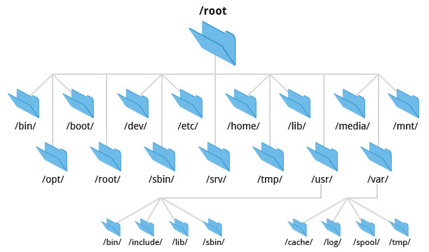
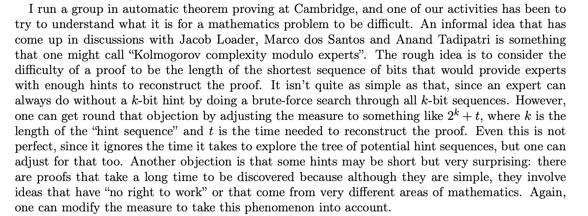

read_block(id)write_block(id, data)open("/dev/mmcblk0p1", O_RDWR); 然后 lseekchar[] → 虚拟内存和 mmap → malloc(), free() → list, set, map, …vector<char>).
└── 学习资料
├── .
├── ..
├── .学习资料(隐藏)
├── ……
└── 操作系统
while ((entry = readdir(dir)) != NULL) { // busybox/coreutils/ls.c
if (entry->d_name[0] == '.') {
if (!(option_mask32 & (OPT_a|OPT_A))) continue;
if (!(option_mask32 & OPT_a) && (!entry->d_name[1] || (entry->d_name[1] == '.' && !entry->d_name[2])) continue;
}
/dev/nvme0n1p1 (Namespace 1, Partition 1), 优盘、网络 (WebDAV)\, 例如 \Device\HarddiskVolume1, \Driver\Ntfs\\: Universal Naming Convention 路径 (网络)\\server\share → \Device\LanmanRedirector\server\share
\ 不能 cd，但可以用 API 访问HANDLE hDevice = CreateFile(
"\\\\.\\PhysicalDrive0", GENERIC_READ | GENERIC_WRITE,
FILE_SHARE_READ | FILE_SHARE_WRITE, NULL, OPEN_EXISTING, 0, NULL);
A:\, B:\, C:\, …\??\C:\ (\?? 是 per-user 的命名空间)/dev/consolemount -t iso9660 /dev/cdrom /mnt/cdrom; UDF (DVD, Blue-Ray)struct iso9660_primary_descriptor {
uint8_t type; /* ISO9660_VD_PRIMARY */
char standard_id[5]; /* 必须是 "CD001" */
...
char system_id[32]; /* 系统标识符 (如 "Win32", "LINUX") */
char volume_id[32]; /* 卷标识符 (光盘名称) */ ...
我们完全可以构建一个 “只有一个文件” 的 Linux 系统——Linux 系统会首先加载一个 “init RAM Disk” 或 “init RAM FS”，在作系统最小初始化完成后，将控制权移交给 “第一个进程”。借助互联网或人工智能，你能够找到正确的文档，例如 The kernel’s command-line parameters 描述了所有能传递给 Linux Kernel 的命令行选项。
ioctl(3, LOOP_CTL_GET_FREE)ioctl(4, LOOP_SET_FD, 3)FHS enables software and user to predict the location of installed files and directories.

int mkdirat(int dirfd, const char *pathname, mode_t mode);
int unlinkat(int fd, const char *path, int flag);
ssize_t getdents64(int fd, void *dirp, size_t count);
bash -c 'echo /etc/**/*' 的 stracelibc-2.27.so, libc-2.26.so, …libc.so.6“，能否避免文件的一份拷贝？我们可以使用符号链接创建 “近乎任意” 的目录结构，包括任意的图结构 (状态机)，操作系统也能正确解析。操作系统的机制 (系统调用、文件系统……) 给了我们无限的创作空间。
/nix/store/b6gvzjyb2pg0kjfwrjmg1vfhh54ad73z-firefox-33.1nix-shell -p python3 nodejsnix-shell -p $(nix-env --list-generations | grep "3 days ago")
nix-env --switch-generation 后直接测试.学习资料 实际存在、API 可以访问、命令行工具默认不显示ls -l: 查看对象的属性$ ls -l example.txt
-rw-r--r-- 1 alice staff 1024 Mar 10 12:34 example.txt
mode link owner group size modified name
ssize_t fgetxattr(int fd, const char *name, void value[.size], size_t size);
int fsetxattr(int fd, const char *name, const void value[.size], size_t size, int flags);

目录 (链接) 和文件 (对象) 的简洁抽象赋予了我们管理对象的能力。操作系统的设计者也扩展了文件的元数据，使我们能给文件打上复杂的标签，从而使应用程序 (和操作系统) 提供更好的服务。
教科书 Operating Systems: Three Easy Pieces: